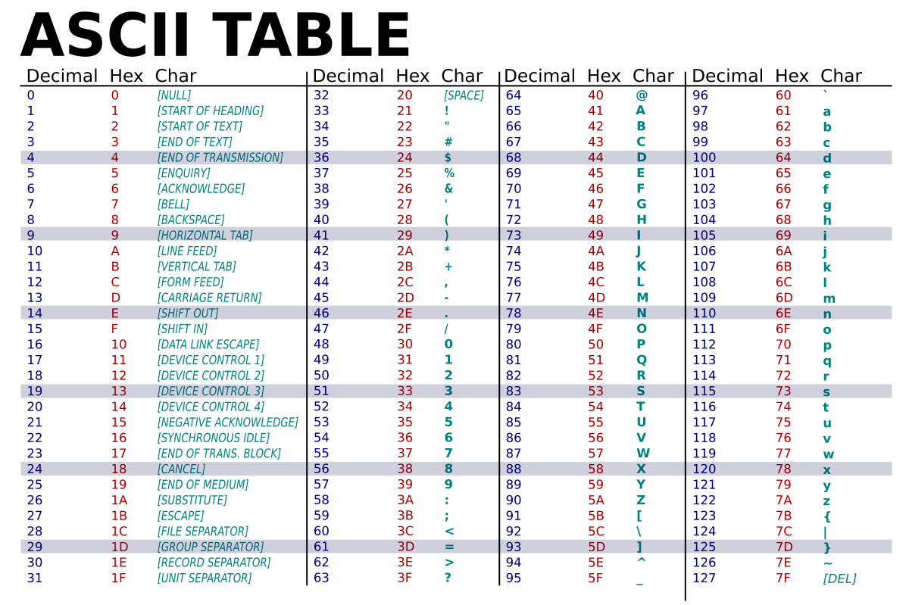

🧩 Représentation des caractères en machine
Les ordinateurs ne manipulent que des 0 et des 1. Pour traiter du texte, il faut donc associer chaque caractère (lettre, chiffre, symbole, espace…) à une valeur numérique unique. C’est le rôle des normes de codage des caractères.
🔹 Les normes
Une norme de codage définit la correspondance entre :
- Un caractère (par ex.
A,b,é,#,?) - Et sa représentation numérique (un entier, souvent exprimé en binaire).
Les principales normes utilisées au fil du temps sont :
- ASCII (1963) — première norme universelle.
- ISO Latin / ISO-8859 (1980s) — extension d’ASCII pour les langues européennes.
- Unicode / UTF-8 (1990s–auj.) — norme universelle couvrant toutes les langues du monde.
🔸 ASCII
🕰️ Histoire
Avant 1960, chaque constructeur d’ordinateur avait son propre système de codage. Pour uniformiser les échanges, l’ANSI (American National Standards Institute) crée en 1963 la norme ASCII (American Standard Code for Information Interchange).
ASCII utilise 7 bits pour représenter 128 caractères (de 0 à 127). Une version révisée est publiée en 1967 et devient rapidement un standard international.
🔢 Tableau ASCII

🔄 Conversion ASCII
-
Caractère → Code ASCII Exemple :
A→ 65 → 01000001₂ -
Code ASCII → Caractère Exemple : 01100001₂ → 97 →
a
Exercice 1:
-
Complète le tableau suivant en indiquant, pour chaque caractère, son code décimal et sa valeur binaire (sur 8 bits).
-
Fais ensuite l’opération inverse : retrouve le caractère correspondant au code fourni.
| Caractère | Code décimal | Code binaire (8 bits) |
|---|---|---|
| B | ? | ? |
| a | ? | ? |
| 5 | ? | ? |
| (espace) | ? | ? |
| Code décimal | Code binaire (8 bits) | Caractère |
|---|---|---|
| 67 | ? | ? |
| 101 | ? | ? |
| 33 | ? | ? |
| 48 | ? | ? |
➡️ Les conversions s’effectuent souvent automatiquement en informatique à l’aide de fonctions :
- En Python :
ord('A') # renvoie 65
chr(97) # renvoie 'a'
🚫 Un codage centré sur l’anglais
Le code ASCII a été conçu aux États-Unis dans les années 1960, à une époque où l’informatique était principalement développée dans un contexte anglophone. Son objectif était de représenter les caractères nécessaires à la langue anglaise, sans envisager les besoins linguistiques d’autres alphabets européens.
Ainsi, le jeu ASCII ne contient que :
- Les 26 lettres de l’alphabet latin non accentuées (
A–Z,a–z), - Les chiffres (
0–9), - Les signes de ponctuation (
.,,,;,?,!, etc.), - Quelques symboles spéciaux (
@,#,$,%,&, etc.), - Et des caractères de contrôle utilisés pour la communication (comme le retour chariot ou la tabulation).
Mais il exclut totalement les caractères spécifiques aux langues européennes tels que :
- Lettres accentuées :
é,è,à,ù,ç,ô,ï,ñ, etc. - Guillemets français :
« » - Symboles monétaires :
€,£ - Caractères propres à d’autres langues européennes :
ß,ø,å, etc.
Cette conception centrée sur l’anglais limite fortement son utilisation dans les pays d’Europe, où les accents et symboles particuliers font partie intégrante de l’orthographe et de la grammaire.
🔸 ISO Latin (ISO-8859-1)
📜 Présentation
L’ISO (Organisation internationale de normalisation) crée dans les années 1980 la famille ISO 8859, dont la plus célèbre est ISO 8859-1 (Latin-1).
- Utilise 8 bits → 256 caractères possibles (0 à 255).
- Les 128 premiers sont identiques à ASCII.
- Les 128 suivants ajoutent les lettres accentuées et symboles supplémentaires pour les langues d’Europe occidentale.
🔢 Tableau ISO-8859-1

🔄 Conversion ISO Latin
Le principe reste le même qu’en ASCII, mais sur 1 octet complet (8 bits). Exemple :
é→ 233 → 11101001₂- 11000001₂ → 193 →
Á
Exercice 2:
🔹 Énoncé 1 – Conversion de caractères
Complète le tableau suivant avec le code décimal et le code binaire sur 8 bits correspondant à chaque caractère ISO-8859-1.
| Caractère | Code décimal | Code binaire (8 bits) |
|---|---|---|
| é | ? | ? |
| à | ? | ? |
| ç | ? | ? |
| ü | ? | ? |
| É | ? | ? |
🔹 Énoncé 2 – Conversion inverse
Retrouve le caractère correspondant à chaque code ISO-8859-1 donné.
| Code décimal | Code binaire (8 bits) | Caractère |
|---|---|---|
| 160 | ? | ? |
| 192 | ? | ? |
| 231 | ? | ? |
| 241 | ? | ? |
| 250 | ? | ? |
🔸 UTF-8 (Unicode Transformation Format)
🌍 Pourquoi UTF-8 ?
Avec la mondialisation et Internet, il fallait un système capable de représenter toutes les langues du monde (arabe, chinois, russe, emojis, etc.). C’est pourquoi la norme Unicode est créée dans les années 1990.
UTF-8 est un format de codage d’Unicode :
- Compatible avec ASCII (les 128 premiers caractères sont identiques).
-
Utilise de 1 à 4 octets selon le caractère :
-
1 octet pour les caractères ASCII.
- 2, 3 ou 4 octets pour les autres (ex : caractères accentués, chinois, emojis).
principe général
Le codage UTF-8 (Unicode Transformation Format – 8 bits) est un système de représentation variable : il n’utilise pas toujours le même nombre d’octets selon la valeur du caractère Unicode à encoder.
Chaque caractère Unicode possède un point de code (de la forme U+XXXX) exprimé en hexadécimal.
Ce point de code est ensuite converti en binaire, puis inséré dans une structure UTF-8 spécifique, selon sa plage de valeurs.
| Nombre d’octets | Plage Unicode couverte | Schéma binaire UTF-8 |
|---|---|---|
| 1 octet | U+0000 → U+007F | 0xxxxxxx |
| 2 octets | U+0080 → U+07FF | 110xxxxx 10xxxxxx |
| 3 octets | U+0800 → U+FFFF | 1110xxxx 10xxxxxx 10xxxxxx |
| 4 octets | U+10000 → U+10FFFF | 11110xxx 10xxxxxx 10xxxxxx 10xxxxxx |
Chaque x représente un bit issu du code Unicode du caractère.
Ainsi, plus le caractère est complexe (ou vient d’un alphabet éloigné du latin), plus le nombre d’octets nécessaires est élevé.
🔄 Exemple
| Caractère | Code Unicode | Codage UTF-8 (hex) | Taille |
|---|---|---|---|
| A | U+0041 | 41 | 1 octet |
| é | U+00E9 | C3 A9 | 2 octets |
| € | U+20AC | E2 82 AC | 3 octets |
| 😀 | U+1F600 | F0 9F 98 80 | 4 octets |
➡️ Exemple en Python :
'é'.encode('utf-8') # renvoie b'\xc3\xa9'
'€'.encode('utf-8') # renvoie b'\xe2\x82\xac'
Exercice 2:
🔹 Énoncé 1 – Compléter le tableau
Complète le tableau suivant en précisant, pour chaque caractère, son code Unicode, son codage UTF-8 en hexadécimal, et la taille (en octets) utilisée.
| Caractère | Code Unicode | Codage UTF-8 (hex) | Taille (octets) |
|---|---|---|---|
| B | ? | ? | ? |
| ñ | ? | ? | ? |
| ç | ? | ? | ? |
| Ω | ? | ? | ? |
| 🐱 | ? | ? | ? |
🔹 Énoncé 2 – Lecture inverse
Retrouve le caractère correspondant à chaque séquence UTF-8 donnée :
| Codage UTF-8 (hex) | Code Unicode | Caractère | Taille (octets) |
|---|---|---|---|
| 43 | ? | ? | ? |
| C3 B1 | ? | ? | ? |
| E2 82 AC | ? | ? | ? |
| F0 9F 98 81 | ? | ? | ? |
🔹 Aide
-
Rappelle :
-
UTF-8 code les caractères selon leur valeur Unicode (U+XXXX).
- 1 octet → caractères ASCII (0x00 à 0x7F).
- 2 octets → caractères accentués et latins étendus (U+0080 à U+07FF).
- 3 octets → symboles, alphabets grecs, monétaires (U+0800 à U+FFFF).
- 4 octets → emojis, idéogrammes, symboles complexes (U+10000 et plus).
🕵️♀️ Activité bonus – Le message secret en UTF-8
🔹 Contexte
Un message a été envoyé sur un réseau, mais il n’est pas lisible directement :
il a été encodé en UTF-8 sous forme hexadécimale.
À toi de le décoder pour retrouver le message original !
1️⃣ — Le message chiffré
43 27 65 73 74 20 75 6E 20 6D 65 73 73 61 67 65 20 73 65 63 72 65 74 20 3A 20 43 27 65 73 74 20 3C C3 A9 63 6C 61 74 3E 21
2️⃣ — Indices pour t’aider
- Chaque octet (ou paire hexadécimale) correspond à 1 caractère UTF-8.
- Si un octet commence par C2 ou C3, il fait partie d’un caractère accentué (2 octets).
- Tu peux t’appuyer sur la table ASCII étendue pour les valeurs ≤ 0x7F.
🧠 En résumé
| Norme | Année | Bits | Caractères | Particularité |
|---|---|---|---|---|
| ASCII | 1963 | 7 | 128 | Standard américain de base |
| ISO-8859-1 (Latin-1) | 1985 | 8 | 256 | Ajoute les lettres accentuées |
| UTF-8 | 1992 | 8 (1–4 octets) | +1 million | Universel (toutes les langues, compatible ASCII) |